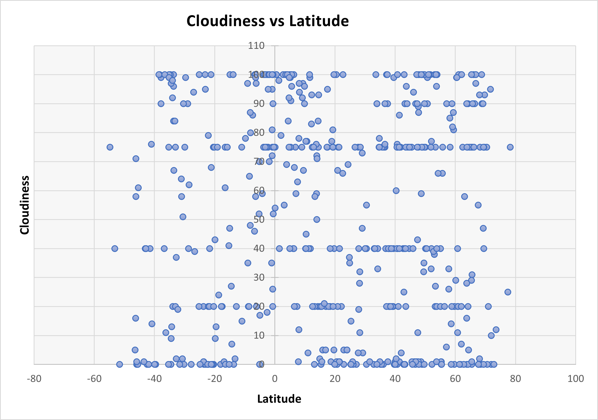

What is Cloudiness?
Cloudiness is the defined by the amount of sky covered by clouds. Cloud cover is measured in oktas, or eighths of the sky. A laser cloud base recorder is used to estimate partial cloud amount. For each layer of cloud identified by the instrument a time weighted average is used to derive the average amount. Such measurements are by their nature only representative of the cloud that has passed directly above the instrument, not of the total sky that is on view from the station. Total cloud amount is only reported from stations where the human observer is present. The following chart depicts the % cloudiness of various cities by their latitude.
